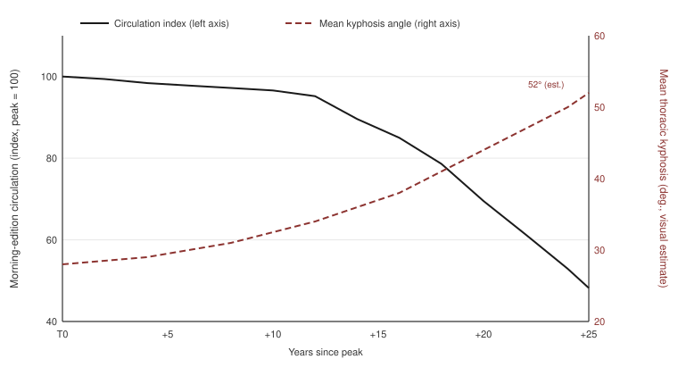

Political Senescence
Abstract
In most societies, age precedes rank. From the age-set systems of East Africa to the seniority principle of the Japanese firm, the study of gerontocracy has repeatedly confirmed an isomorphism between the accumulation of calendar years and the accumulation of authority. This paper reports on a society in which the causal arrow is reversed: a society in which the approach to rank produces age. Drawing on more than a decade of participant observation in the Editorial Bureau of Company X, a Japanese national daily in decline, it describes the bodily aging — far in excess of calendar age — observable among those promoted to the rank of deputy managing editor and above, a phenomenon here termed political senescence, and analyzes its generative mechanism as the competition and compounding of three hypotheses: attrition, selection, and mimicry. The analytical frame combines the concept of involution — the turn of a system deprived of external growth toward internal elaboration — with the "three bodies" of medical anthropology. The conclusion can be summarized in one sentence: the soul is sold in a lump sum; the body pays in installments.
Keywords: political senescence; soul line; involution; bodily hexis; participant observation; newspapers
1 Introduction — The Problem
One winter morning, I shared an elevator in a headquarters building in central Tokyo with a man. The doors closed. The man did not notice me — or noticed me and chose the etiquette of not noticing1. From where I stood I could see him in profile. His thoracic spine curved deeply forward; his head projected several centimeters beyond the vertical line of his shoulders. His white hair was undyed. In his hands, not a smartphone but a sheet of A4 paper folded in quarters. Its contents were illegible from my position, but it was the kind of document that is legible to those to whom such documents are legible. The personnel database records, for his calendar age, a figure difficult to reconcile with observation. The elevator stopped; the man got off. His gait showed a marked restriction in the range of motion of the hip joints. I recorded the morning's observation in my field notes that evening. This paper is written from more than a decade's sediment of such notes.
Anthropology has recorded many societies in which age produces authority2. Age determines grade; grade determines voice. The seniority principle of the Japanese firm has been understood as a mild variant of this lineage. In my field, however, the arrow points the other way. It is not that age brings rank. It is that the approach to rank brings age. Those holding the rank of deputy managing editor and above were systematically "older" than the standard body of Japanese men of their generation — in posture, hair, skin, and gait. Most of them are in their late forties and fifties. Their bodies are walking twenty to thirty years ahead of them.
The outline of the field first. Company X is a Japanese national daily. Its morning-edition circulation peaked early in the present century3. It has declined without interruption since; indexed to 100 at the peak year, it stands at around 50 as of this writing. In less than a quarter century, the external world has halved. Over the same period, the internal world of the Editorial Bureau — the number of committees, the layers of consensus-building, the fine grain of the vocabulary of personnel — has, as far as my observation reaches, grown steadily more elaborate. This is the organizational version of what Geertz found in the wet-rice agriculture of Java: involution, the process by which a system whose external expansion has stopped turns toward internal complication4. The central claim of this paper is that the cost of this involution is being transferred onto the bodies of the members of one particular stratum.
The altitude at which the transfer begins can be specified. An invisible line runs through the hierarchy of Company X's Editorial Bureau. Below the line, the retention of the soul and promotion are compatible. Above it, as a rule, they are not. I call this line the soul line. Just as the tree line5 does not permit a tree to stand upright above a certain altitude, the soul line does not permit a soul to stand upright above a certain rank. By observation, the soul line in Company X's Editorial Bureau passes between the headship of a non-mainstream department and the rank of deputy managing editor. As far as the headship of a non-mainstream department, an individual can arrive without selling the soul. Above that, there are only two routes. The first is passage by exceptional ability or achievement. I call this altitude acclimatization and exclude it from the present study. The acclimatized can breathe above the soul line. They are few, but they exist. The second route is internal politics. The subjects of this paper are the travelers of the second route.
This paper defines political senescence as bodily aging, far in excess of calendar age, that accompanies long engagement in internal politics6. For its generative mechanism, three hypotheses are advanced. First, the attrition hypothesis: that political labor — the drafting of memos, nemawashi (the prior engineering of consent), the calculus of seating order, upward reporting — itself corrodes the body. Second, the selection hypothesis: that at altitudes above the soul line, bodies that look old are preferred, and survive. Third, the mimicry hypothesis: that assimilation to the bodily norms of gerontocratic rule — the wearing of a body resembling one's superiors — functions as a display of loyalty. The three are not mutually exclusive. As Chapter 5 argues, political senescence is most likely their compound.
The paper proceeds as follows. Chapter 2 reviews the relevant literatures and locates the study. Chapter 3 describes the methods. Chapter 4 presents three cases. Chapter 5 examines the three hypotheses and attempts their integration under the theory of involution. Chapter 6 concludes.
One point should be made clear at the outset. This paper is not a critique of any individual. What it describes is a type, and the structure that produces the type. Its subjects, too, as will be shown, are debtors of a structure. Their bodies are its ledger.
2 Prior Research
This study sits at the seam of four research lineages. I take them in turn.
2.1 Age and Power
The anthropology of aging has established two basic findings: that the meaning of age is culturally constructed, and that the distribution of age and power is institutionalized differently in different societies. The ethnography of gerontocracy (see note 2) showed institutions in which the accumulation of calendar years converts automatically into authority. Studies of contemporary India and Japan, by contrast, have described processes in which age becomes an object of marginalization and moral evaluation7. The elderly Japanese described by Traphagan perform the activities that hold off senility as moral practice. My field offers the mirror image. The promoted men of Company X have been exempted from — or stripped of — the morality of resisting age. For them, age is less a nature to be resisted than a job requirement to be fulfilled.
In both lineages, the arrow of analysis ran from age to rank, or from age to margin. The reverse arrow — from rank to aging — has, to my knowledge, not been treated systematically.
2.2 Theories of the Body
The reading of the body as a recording medium of society begins with Mauss's "techniques of the body"8. Ways of walking, sitting, and handling tools are not physiology but transmission, and differ from society to society. Douglas pressed the point further, formulating the body as a microcosm of society — a symbolic system in which social tensions are expressed9. Bourdieu's concept of bodily hexis10 wrote class and power into this process of sedimentation, and Wacquant's "bodily capital"11 showed the body to be a capital that is accumulated, converted, and depreciated. Medical anthropology, with Scheper-Hughes and Lock's "three bodies"12, acquired a device for distinguishing analytically among individual experience, social symbol, and political control.
This paper uses these devices more or less as they stand. Its originality lies not in the apparatus but in the object. Wacquant's boxers accumulate bodily capital and hurry to convert it before it depreciates. My subjects run the circuit in reverse: they keep exchanging bodily capital for political capital at a ruinous rate.
2.3 Japanese Organizations and Newsrooms
The ethnography of Japanese organizations has a thick record. From participant observation in a regional bank, Rohlen described the process by which an organization undertakes to form the whole person of its members — "spiritual education"13. Nakane's theory of the vertical society14 formulated the structure in which belonging to a "frame" overrides "attribute"; Kondo described the crafting of selves in the workplace15; Ogasawara described the circuit of informal power by which the gossip of female clerical workers governs the reputations and promotions of salarymen16; Allison described the nightly reproduction of corporate masculinity in the hostess club17. The economy of chikuri — unsolicited upward reporting on one's colleagues — treated in Chapter 4 is the masculine, verticalized variant of the circuit Ogasawara described.
The ethnography of the newsroom likewise has its classics. Tuchman and Gans showed news to be an organizational product18. More recent work has extended to newsrooms in digital transition and decline19. On Japan, there is the institutional analysis of the press clubs as information cartels20, and a literature on the structural bankruptcy of the newspaper business model21. But the concern of these studies has consistently been with how news is made, or why it has ceased to be made. The bodies of those who have stopped making news and begun making careers lie outside the frame.
2.4 Organization and Soul
Finally, there is a lineage concerned with what organizations do to the selves of their members. Goffman named the systematic stripping of the self by total institutions the "mortification of the self"22. Hirschman sorted members' options in the face of organizational deterioration into exit, voice, and loyalty23. Graeber analyzed the spiritual violence inflicted by labor performed in the knowledge of its own pointlessness24. And Geertz's involution (see note 4) showed what happens inside a system that has lost external growth.
These four lineages have treated, respectively, age and power, body and structure, Japanese organizations and the press, organization and self. But the question — what does a declining organization write onto the bodies of those who rise within it? — has fallen into the seam between the four, and has not been picked up. This paper takes the seam as its object.
3 Methods
3.1 The Field and the Observer's Position
The field is the Editorial Bureau at Company X's Tokyo headquarters. The observation period extends over more than a decade. Throughout it, I was employed in the Bureau, occupying the position that the typology of participant observation calls the complete participant25: my subjects treated me as a colleague and did not know that I was an observer. The position is unrivaled in depth of access; it carries the ethical problems discussed below.
A participant observer, however deeply he participates, is a structural stranger in the single respect that he observes. As Simmel argued, it is precisely the peculiar composition of nearness and distance that endows the stranger with objectivity26. My own composition remained, throughout the period, within a range suited to observation. Into the circumstances by which it was so maintained, I do not enter.
3.2 Materials
The materials of this study fall into four classes.
First, personnel materials. Company X's personnel changes are announced in its own pages. I have preserved more than a decade of transfer records and organized them so that each individual's altitude history — the sequence of ranks — can be traced.
Second, records of bodily observation. At their core is fixed-point observation of posture in elevators (systematized in the later period of fieldwork; more than four hundred observations in total). The elevator offers exceptionally good conditions for postural observation: the subject is stationary, the lighting is uniform, and the timing of egress is predictable. Supplementary records include lateral observation of spinal curvature in meeting rooms, and visual assessment, at banquets, of glabellar furrow depth and hair color27. For several years during the epidemic, the banquet data have a gap. Observation continued on the screens of remote meetings, but resolution and framing limited its value as postural data. The possibility that the subjects' aging accelerated during the gap cannot be excluded.
Third, discourse materials: corridor conversation, utterances in the smoking room (before its closure), and farewell-party speeches, recorded where possible.
Fourth, material culture. I observed the formal features of the documents my subjects produce — above all, the memos that circulate in internal politics. I do not enter into their contents. Not because I could not, but because I did not need to: this class of document functions not by its content but by its existence and its routes of circulation.
No measuring instruments were used, for ethical reasons (see 3.4). In their place, I have received professional training in observation at a news organization. Whether that training guarantees the validity of the present measurements is a judgment I leave to the reader.
3.3 Analytical Framework
The analysis rests on three theories. First, Scheper-Hughes and Lock's "three bodies" (see note 12): the three levels — individual body, social body, body politic — provide the scaffolding on which Chapter 5 integrates the observations. Second, Bourdieu's bodily hexis (see note 10): the view that social structure settles into the body as posture, gait, and the rhythm of speech makes it possible to read political senescence not as an incidental health problem but as the imprint of structure. Third, the concept of involution already introduced (see note 4).
3.4 Ethical Considerations
This study is classified as covert observation. The ethical problems of the method have been discussed repeatedly28. I take those discussions seriously. That said, three points.
First, every case in this paper is a composite of multiple individuals and corresponds to no particular person. Should any reader within the subject population feel that he is the one described, the feeling is a misrecognition. The ease with which the misrecognition arises, however, is itself evidence for the paper's thesis — the reality of the type — and I accept it with gratitude.
Second, subjects were neither informed of the study nor asked for consent. The announcement "I am conducting a longitudinal observation of your stoop" would irreversibly destroy the natural state of the field.
Third, the mutuality of observation. The Editorial Bureau is, by its nature, a space in which members observe one another (see Chapter 4). The premise of unidirectional observation never held in this field to begin with. This fact does not cancel the ethical debt of covert observation, but it is relevant to any accounting of how the debt is distributed.
Conflict of interest: A conflict of interest requiring disclosure exists. Its disclosure, being incompatible with the requirements of anonymity, is withheld.
3.5 Limitations of Method
The limitations of this study are three. First, the sample is confined to one bureau of one company. Second, all bodily indices rest on non-instrumental observation. Third, the aging of the observer. I, too, aged by exactly the length of the observation period. How much of the observed aging belongs to change in the subjects, and how much to deterioration in the observer's eyesight and criteria — the problem known in longitudinal research as observer drift29 — this study cannot fully separate. That the separation cannot be made may itself say something about the nature of time in this organization; I return to the point in Chapter 6.
4 Ethnographic Description — Three Bodies
4.1 The Field — An Ecology of the Soul Line
Company X's Editorial Bureau occupies several floors of the headquarters building. At its center is a large open room lined with departmental "islands," where hours that heat toward deadline alternate, within each day, with hours that slacken. A reporter's career describes, roughly, an altitude series: reporter, desk editor, department head, deputy managing editor, managing editor. As stated in the introduction, the soul line passes between the headship of a non-mainstream department and the rank of deputy managing editor30.
Above and below the line, the content of labor changes discontinuously. Labor below the line is, ultimately, connected to the printed page. Labor above the line is not — as a rule. Instances of officials at deputy-managing-editor rank or above writing bylined articles were not absent during the observation period; their frequency, however, was not such as to cast doubt on the rule, but such as to sharpen its outline. Their labor consists of meetings, of meetings before meetings, and of memos. The memo records the utterances of superiors, interprets them, tracks the movements of other departments, and speculates on personnel; it is drafted, transmitted, and sometimes read.
The heat per unit area of the open room has declined observably over the past decade and more. The heat of deadlines remains, but its total quantity thins with the age of the paper; meanwhile, in one corner of the floor — the precinct where those above the soul line gather — a different heat is conserved. It is heat that does not go toward the page.
It may be noted that the etiquette of rank inside elevators (the position at the control panel being the lowest) meant that my fixed-point data arrived automatically tagged with relative rank31.
4.2 Case A — The Scribe's Body
Case A is a deputy managing editor in his fifties (all three cases below are composites of multiple individuals; see 3.4). The greater part of A's day consists of typing memos into a laptop. He types during meetings and after them. While typing, A inclines forward as if offering his head to the screen; the curvature of his thoracic spine reaches, by visual estimate, fifty degrees. The posture is not confined to typing. Standing or walking, A's body retains the typing posture. The posture is no longer an act; it is a trait.
The scribes of medieval Europe often left a set phrase in the colophons of their manuscripts: Tres digiti scribunt, totum corpusque laborat — three fingers write, but the whole body labors32. The scribe's body was the apparatus that paid the cost of reproducing sacred text. A's body sits within the same accounting structure; only the nature of the text differs. The scribe reproduced scripture; A reproduces the intentions of his superiors. Transposed into an East Asian idiom: the copying of sutras was a practice for the accumulation of merit. A's memos, too, are merit — except that the merit is addressed not to the Buddha but to the managing editor.
The group photographs in the company's published anniversary volumes are this study's only retrospective bodily source. In the old photographs, A stands upright. The curvature is not a trait he entered with. It accumulated across his years of service — like tree rings, or like interest.
If one traces the history by which upright posture has been bound to military, educational, and moral value33, A's curvature invites reading as a moral failure. This paper declines that reading. A's curvature is not a failure; it is a payment. It may be added that a considerable portion of the memos A produces show no trace of having been read. On the psychic cost of continuing to write unread documents, a classic treatment already exists (see note 24).
4.3 Case B — A Hannya Without a Mask-Carver
Case B is an official of deputy-managing-editor grade, in his fifties. By the observational record, B's mode of conduct changed after a certain point: from the promotion pattern of his cohort and the disposition of vacancies above him, the possibility of reaching the far side of the soul line entered B's field of vision. The perception of possibility does not always produce desire. In B, it did. Thereafter, B's rate of banquet attendance rose; his seat fixed itself diagonally in front of his superiors; and the onset of his laughter came to track theirs at a mean delay of under one second.
Over the same several years, two vertical furrows were carved into B's glabella, and deepened (for the grading criteria, see note 27). At first the furrows appeared only during contraction of the facial muscles. In the later observation period, they no longer disappeared at rest. They are the trace of sustained contraction of the corrugator supercilii — the muscle Darwin counted among the muscles of grief, which draws the brows together and downward and contracts under difficulty, displeasure, and deliberation34. B's glabella came to retain the shape of contraction even in scenes requiring none. Expression is no longer a state; it is a terrain.
Theories of the face offer instruments for reading this terrain. Simmel saw in the face the surface on which the inner unity of the person appears most purely35. Mauss traced the conceptual history of the person to the persona — that is, to the mask36. The person was, at its origin, a removable face. What Case B exhibits is the process by which removability is lost.
Colloquial Japanese describes a countenance like B's as hannya no yō — "like a hannya." The description is more precise than it appears. In noh, the expression of a mask is not fixed. To tilt the mask upward is called terasu, "to brighten": the mask lightens. To tilt it downward is called kumorasu, "to cloud": the mask darkens37. B's countenance implements the same mechanism. Turned toward superiors — the mask tilted upward — it brightens. Turned toward subordinates — the mask tilted downward — it clouds. A single face outputs two expressions according to the direction of the gradient. This output characteristic coincides exactly with the specification demanded of middle management in a vertical society.
The theory of rites of passage reinforces the interpretation. In the three-stage schema of separation, transition, and incorporation, the rituals of the liminal period are frequently attended by monstrous masks38. The rank of deputy managing editor is structurally liminal: no longer a reporter, not yet an executive. Ordinarily, the ritual mask is lent from outside and collected when the ritual ends. B's mask was generated from the side of the face, without passing through the hands of a menuchi — a carver of noh masks. Even when the rite of incorporation is complete — even when B reaches the executive floor — this mask will not come off. As the general theory of sacrifice teaches, offerings are not returned. I return to the point in 5.4.
4.4 Case C — The Watcher's Curvature
Case C is an official of department-head or deputy-managing-editor grade, in his fifties. His hair is entirely white; the curvature of his spine is second only to A's. C's central practice is observation and report. He observes the conduct of subordinates — lateness, expenses, flaws in copy, missteps at banquets — records it, and reports it upward. The practice has not been assigned to him as duty. C performs it voluntarily, sustainedly, and, as far as observation reaches, with deep satisfaction. To borrow the vocabulary of ikigai research39, C's ikigai is unambiguous, and does not waver. Whether such stability should be called happiness lies beyond the scope of this paper.
The anthropology of gossip has treated rumor as a horizontal apparatus for the maintenance of communal norms40. C's practice is a variant of the apparatus, with one decisive difference: gradient. C's gossip does not circulate horizontally. It is delivered vertically, and upward only. Where gossip is a commons, chikuri is a private gift (Chapter 5).
What the historical study of denunciation under totalitarian regimes has repeatedly found is the banality of its motives41: not ideology, but promotion, housing, irritation at a neighbor. My observations are consistent with the finding. Denunciation requires no cause. Where an institution keeps a receiving window open, denunciation occurs. The window of Company X's Editorial Bureau is open.
Foucault wrote that the tower of the panopticon need contain no one42: the mere possibility of the gaze suffices for discipline. At Company X, there is someone in the tower. He is in his fifties, white-haired, and curved. Surveillance was never automated. It aged as manpower.
4.5 Summary
The three cases inhabit the same altitude band and make their payments at different sites: A with posture, B with countenance, C with pigment and curvature. The sites differ; the currency is one.
5 Discussion
5.1 The Three Hypotheses
The attrition hypothesis attends to the bodily cost of political labor itself. Long hours of seated forward inclination (Case A), the frequency and depth of banquets (Case B), sustained vigilance (Case C) — all are real physiological loads. Japanese medical anthropology has traced how overwork came to be institutionalized as illness43. But the overwork of political labor lies outside the institution. The workload of a man who writes no articles leaves no trace on the page; it is therefore not measured; it therefore does not exist. Political labor is labor that is never booked as labor, and its attrition is institutionally invisible. The weakness of the attrition hypothesis is that it explains the speed of the aging but not its function.
The selection hypothesis explains the function: at altitudes above the soul line, bodies that look old are preferred. Why? Because a youthful body is the bodily display of exit capability. A body still convertible on the outside market may betray the organization at any moment. Conversely, a body that has visibly lost its outside value functions as collateral for loyalty. The logic is the bodily version of what commitment theory calls the burning of one's bridges44. Only he who hands over a hostage is trusted. The hannya countenance and the stoop are the smoke, still rising, of bridges already burned. In Hirschman's terms (see note 23), the soul line is the altitude at which the credibility of exit is extinguished. Only to those who have proven with their bodies that they cannot leave is loyalty above that altitude permitted.
The mimicry hypothesis reverses the direction: the aged body is not selected but donned. In biological terms, this is Batesian mimicry45: a harmless species imitates the appearance of a harmful one and thereby escapes predation. The candidate for deputy managing editor assimilates himself to the bodily norms of his already-aged superiors — curvature, white hair, slowness — and thereby escapes elimination. In a vertical society (see note 14), the safety of the subordinate is purchased by oneness with the superior. The oneness does not stop at the spirit.
The three hypotheses are not exclusive; they compound as stages. Political senescence begins as mimicry (the donning), becomes substance through attrition (the costume becomes flesh — Bourdieu's hexis describes precisely this process), and is fixed by selection (only the substantiated remain). A mask, once it can no longer be removed, is called a face.
5.2 Involution — Figure 1
Figure 1 superimposes the trajectory of Company X's morning-edition circulation index on the trajectory of the mean thoracic kyphosis angle of the cohort at deputy-managing-editor rank and above46. The two curves are mirror images.

Geertz's involution named the process by which a wet-rice agriculture whose extensive expansion had ceased turned toward the intensification and elaboration of labor (see note 4). What is occurring in Company X's Editorial Bureau is its organizational version. The more the external rewards — circulation, influence, scoops — thin out, the more elaborate the internal symbolic economy becomes: committees, seating orders, layers of nemawashi, the vocabulary of personnel, and memos. An economy that can no longer earn foreign currency (the trust of readers) keeps printing domestic currency (the confidence of superiors). Printing costs money. The right-hand axis of Figure 1 is the account of the printing costs.
In its proper sense, involution means that labor grows more elaborate while output per head stagnates. Political labor purifies the definition. It grows more elaborate, and produces nothing.
5.3 Integration by the Three Bodies
Scheper-Hughes and Lock's three levels (see note 12) integrate the observations so far.
At the level of the individual body, the subjects are in pain. In the discourse materials, pain in the shoulders and lower back was among the most frequent of topics — and, notably, almost the only topic in their conversation that carried no political context. Pain is the last apolitical language left to them.
At the level of the social body, their bodies are the living representation of the organization's decline. The organization possesses no official language for its own decline: on the page it is called digital strategy; in meetings it is called reform. What goes unspoken, however, does not disappear. It returns as the posture of executives. The isomorphism of Figure 1 is the measurement of that return.
At the level of the body politic, their bodies are relay points of discipline. As Case C shows, surveillance is implemented not as an institution but as a person; and rank is executed daily, as banquet coordinates and elevator positions. At this level, the term "body politic" ceases to be a metaphor.
5.4 Gift and Sacrifice
Finally, the whole seen from the theory of exchange. As Mauss showed, the gift creates the obligation of return47. Chikuri is the upward gift of information. The return is paid in personnel decisions. But the exchange is an extreme case of unequal exchange: the item, the timing, and the rate of the return are set unilaterally by the recipient. All the giver can do is raise the frequency of giving. Case C's sustained practice reads as the consequence of this structure.
The theory of sacrifice reaches deeper. For Hubert and Mauss, sacrifice is an operation that opens a circuit between the profane and the sacred through the destruction of an offering48. Case B's unmasked face, and Case A's upright posture, are offerings in this sense. The destroyed good opens the circuit to the sanctuary of the executive floor. And, as the general theory teaches, offerings are not returned.
Goffman's mortification of the self (see note 22) named the stripping executed by the total institution at admission: the haircut, the confiscation of belongings, the conversion of names into numbers. Company X is not a total institution. Its stripping is therefore executed not at entry and not in a lump, but at each stage of promotion, in installments, and by the self. Call it the privatization of the mortification of the self.
Here the formula of the introduction acquires its full meaning. The soul is sold in a lump sum; the body pays in installments. The decision to sell is made once. But the payment of the price continues — in posture, in glabella, in pigment, in range of motion — across the whole term of service. The interest is compound.
6 Conclusion
This paper has named the bodily aging in excess of calendar age observed among those promoted to deputy managing editor and above in the Editorial Bureau of a declining national daily political senescence, and has described it on the basis of more than a decade of participant observation. The conclusions are three. First, political senescence is a three-stage compound of mimicry, attrition, and selection. Second, its total quantity is a function of the organization's involution: the loss of external rewards drives the elaboration of the internal symbolic economy, and the cost is transferred onto the bodies of a particular stratum (Figure 1). Third, the transfer follows the logic of gift and sacrifice; the payment is by installment, and the interest is compound.
The organization cannot speak its own decline directly. In print, the decline is called strategy; in meetings, reform. But what goes unspoken does not vanish. It is entered, accurately, on the bodies of those who climbed above the soul line — as kyphosis, as the carving of the glabella, as white hair. The official history of the organization is printed on paper. Its actual history is printed in flesh.
One point reserved in 3.5. That the observer's aging cannot be separated from the subjects' proved to be not only a defect of method but a finding. In an organization whose external clock — circulation — is winding down, time is measured only by the cycle of personnel transfers and the deterioration of bodies. I lived the same internal time as my subjects. That the two cannot be separated is only natural. In this organization, time no longer flows outside.
The limitations of the study are the confinement of the sample to one bureau of one company; the non-instrumental character of all measurement; and the fact that the rater's own criteria deteriorated over time (see note 27). Future research will require calibrated multiple raters and comparison across organizations. The same phenomenon is predicted in other organizations where external rewards thin and the internal labor market closes: broadcasters, government ministries, and universities (especially universities)49.
One last point. The subjects of this paper are not villains. They are men who climbed the only ladder left inside an organization whose outside was disappearing. Midway up the ladder they paid their souls as toll, and they have been paying interest with their bodies ever since. I did not write this paper to condemn them. I wrote it to record. Recording is what newspapers were once good at.
Acknowledgments This paper has not undergone peer review. That is why no reviewers are thanked.
Notes
- Civil inattention: Goffman, Erving, Behavior in Public Places: Notes on the Social Organization of Gatherings, Free Press, 1963. The etiquette of registering another's presence while directing no further attention to it. The elevator is its purest culture medium. My observations were conducted under cover of this etiquette; for the methodological implications, see 3.4. ↩
- Representatively, Spencer, Paul, The Samburu: A Study of Gerontocracy in a Nomadic Tribe, Routledge & Kegan Paul, 1965. Note the subtitle. A classic ethnography of a society in which age produces authority; the present paper records its mirror image. On the cultural construction of aging generally, see Lock, Margaret, Encounters with Aging: Mythologies of Menopause in Japan and North America, University of California Press, 1993. ↩
- Circulation figures are based on the published values of the circulation audit bureau. Out of consideration for identifiability, this paper gives neither absolute figures nor calendar years, using only an index (peak year = 100) and elapsed years (Figure 1). The anonymization measures of this paper exist for the sake of individuals before they exist for the sake of the organization (see 3.4). ↩
- Geertz, Clifford, Agricultural Involution: The Processes of Ecological Change in Indonesia, University of California Press, 1963. An analysis of the process by which a wet-rice agriculture whose extensive expansion had halted turned toward the internal elaboration and complication of labor input. ↩
- The tree line: the upper limit at which trees can grow upright in high mountains. Above it, cold and wind force trees into a creeping form (krummholz), or into renouncing growth altogether. Cases of souls that assumed the creeping form are treated in Chapter 4. ↩
- Senescence is the term of art for aging in biology and gerontology. In cell biology, cellular senescence denotes the state of a cell that has ceased dividing yet does not die, and continues to secrete inflammatory factors. An entity that does not divide, does not die, and goes on emitting inflammatory signals into its surroundings — the extent to which this definition can be transposed to the present subject population requires careful examination (Chapter 5). ↩
- Cohen, Lawrence, No Aging in India: Alzheimer's, the Bad Family, and Other Modern Things, University of California Press, 1998; Traphagan, John W., Taming Oblivion: Aging Bodies and the Fear of Senility in Japan, State University of New York Press, 2000. Traphagan's elderly Japanese perform the activities that delay senility — exercise, hobbies, sociality — as moral practice. The subjects of this paper stand outside that moral sphere. ↩
- Mauss, Marcel, « Les techniques du corps », Journal de Psychologie 32, 1936 (lecture delivered 1934). The classic that made walking and sitting not physiology but the ways in which society imposes the use of the body. ↩
- Douglas, Mary, Natural Symbols: Explorations in Cosmology, Barrie & Rockliff, 1970. The body as microcosm of society: the tighter the control exerted on social structure, the tighter the control exerted on bodily expression. ↩
- Bourdieu, Pierre, Esquisse d'une théorie de la pratique, Droz, 1972. Bodily hexis is defined as "political mythology realized, em-bodied, turned into a permanent disposition." In the subjects of this paper, the definition leaves the plane of metaphor. ↩
- Wacquant, Loïc, Body & Soul: Notebooks of an Apprentice Boxer, Oxford University Press, 2004. An apprenticeship ethnography of a Chicago boxing gym, including an analysis of the accumulation, management, and conversion of bodily capital. ↩
- Scheper-Hughes, Nancy & Margaret M. Lock, "The Mindful Body: A Prolegomenon to Future Work in Medical Anthropology," Medical Anthropology Quarterly 1(1), 1987, pp. 6–41. The three levels of the individual body, the social body, and the body politic — the last denoting the dimension in which discipline and control traverse individual bodies. In the context of this paper, the term is too literal to require explanation. ↩
- Rohlen, Thomas P., For Harmony and Strength: Japanese White-Collar Organization in Anthropological Perspective, University of California Press, 1974; also his "Spiritual Education in a Japanese Bank," American Anthropologist 75(5), 1973, which describes the "spiritual education" imposed on new bank employees — zazen, pilgrimage, military-style retreats. Company X has no zazen. For the functional equivalent, see Chapter 4. ↩
- Nakane, Chie, Tate shakai no ningen kankei [Personal Relations in a Vertical Society], Kōdansha Gendai Shinsho, 1967. (English version: Japanese Society, Weidenfeld & Nicolson, 1970.) ↩
- Kondo, Dorinne K., Crafting Selves: Power, Gender, and Discourses of Identity in a Japanese Workplace, University of Chicago Press, 1990. ↩
- Ogasawara, Yuko, Office Ladies and Salaried Men: Power, Gender, and Work in Japanese Companies, University of California Press, 1998. An ethnography of the circuit of informal power by which the rumor and unofficial evaluations of female clerical workers govern the reputations and promotions of male employees. ↩
- Allison, Anne, Nightwork: Sexuality, Pleasure, and Corporate Masculinity in a Tokyo Hostess Club, University of Chicago Press, 1994. ↩
- Tuchman, Gaye, Making News: A Study in the Construction of Reality, Free Press, 1978; Gans, Herbert J., Deciding What's News: A Study of CBS Evening News, NBC Nightly News, Newsweek, and Time, Pantheon, 1979. ↩
- Boyer, Dominic, The Life Informatic: Newsmaking in the Digital Era, Cornell University Press, 2013; Usher, Nikki, Making News at The New York Times, University of Michigan Press, 2014. The latter is an inside observation of a prestige paper on the downslope of circulation and authority, and the air of its field is akin to that of the present study; its concern, however, remains newsmaking, not bodies. ↩
- Freeman, Laurie Anne, Closing the Shop: Information Cartels and Japan's Mass Media, Princeton University Press, 2000. ↩
- Kawachi, Takashi, Shinbunsha: Hatan shita bijinesu moderu [The Newspaper Company: A Bankrupt Business Model], Shinchō Shinsho, 2007; Hayashi, Kaori, Media fushin [Media Distrust], Iwanami Shinsho, 2017. Some two decades after the former's publication, the bankruptcy is proceeding on schedule. ↩
- Goffman, Erving, Asylums: Essays on the Social Situation of Mental Patients and Other Inmates, Anchor Books, 1961. The "mortification of the self" denotes the systematic stripping of the self that accompanies admission to a total institution. ↩
- Hirschman, Albert O., Exit, Voice, and Loyalty: Responses to Decline in Firms, Organizations, and States, Harvard University Press, 1970. That the subtitle reads "Responses to Decline in Firms, Organizations, and States" deserves emphasis in the present context. ↩
- Graeber, David, Bullshit Jobs: A Theory, Simon & Schuster, 2018. An analysis of the spiritual violence inflicted on the actor by labor performed in the knowledge of its own pointlessness. Which of the book's five types the political labor of this paper falls under is left as an exercise for the reader; it is noted that multiple assignment is not precluded. ↩
- Gold, Raymond L., "Roles in Sociological Field Observations," Social Forces 36(3), 1958, pp. 217–223. The classic that laid out the four roles from complete participant to complete observer. The advantage of the complete participant is depth of access; the price is ethics. The present study received both at their maximum values. ↩
- Simmel, Georg, „Exkurs über den Fremden," Soziologie, Duncker & Humblot, 1908 ("Excursus on the Stranger"). The stranger, who "comes today and stays tomorrow," bears objectivity by virtue of a peculiar composition of nearness to and distance from the group. ↩
- Glabellar furrow depth was graded on a five-point ordinal scale. The standard (grade three) was the author's own glabella at the start of observation. Hair was recorded for color only; density is not employed as an index. For the metrological problem of the standard's own deterioration over time, see 3.5. ↩
- The classic of the controversy is Humphreys, Laud, Tearoom Trade: Impersonal Sex in Public Places, Aldine, 1970 — a study that provoked one of the largest ethical controversies in the history of social science. I would like to write that the present study shares with that book only its methodological problem, the natures of the two fields being entirely different — but the summary "the observation, in public space, of the ritual conduct of men driven by an ardor incomprehensible from outside" applies to both. ↩
- Observer drift: a known problem of behavioral observation research, in which the observer's criteria of judgment change gradually and unawares over time. It is ordinarily controlled by the periodic calibration of inter-rater reliability; the present study has one rater, who has no one to calibrate against. ↩
- Below the soul line extends a paired ecology — the habitat of bodies that stagnate under institutional protection. It constitutes an independent object of study, and lies outside the scope of this paper. ↩
- In Japanese business etiquette, the position in front of the elevator's control panel is the lowest seat, and the far corner diagonal to it the highest. By this etiquette, my fixed-point data arrived automatically tagged with relative rank — a rare case, methodologically, of etiquette standing in for instrumentation. ↩
- Tres digiti scribunt, totum corpusque laborat ("three fingers write, but the whole body labors"): a set phrase frequent in the colophons of medieval manuscripts. Scribes also left in their colophons complaints of the cold, of back pain, and of the quality of the parchment. The colophon is the one internal company document of the Middle Ages that went uncensored. ↩
- Gilman, Sander L., Stand Up Straight!: A History of Posture, Reaktion Books, 2018. The history by which upright posture has been bound to the military, to education, and to morals. ↩
- Darwin, Charles, The Expression of the Emotions in Man and Animals, John Murray, 1872. Darwin placed the corrugator supercilii at the center of the muscle group that contracts under grief, perplexity, and deliberation. The precursor study is Duchenne de Boulogne, Mécanisme de la physionomie humaine, 1862, which isolated the action of each facial muscle by electrical stimulation. The level of the subjects' consent was the level of the era (compare 3.4). ↩
- Simmel, Georg, „Die ästhetische Bedeutung des Gesichts," 1901 ("The Aesthetic Significance of the Face"). A short essay on the face as the bodily site where the inner unity of the person appears most completely. ↩
- Mauss, Marcel, « Une catégorie de l'esprit humain: la notion de personne, celle de "moi" », Journal of the Royal Anthropological Institute 68, 1938. The lecture that traced the genealogy of the concept of the person from the Latin persona — the mask of the theater. ↩
- To tilt a noh mask upward is called terasu ("to brighten"); to tilt it downward, kumorasu ("to cloud"). That a single mask shows different expressions at different angles is a basic understanding of noh performance theory. The hannya is the mask of a woman transformed by jealousy and resentment into a demon; though a mask of fury, it is said to harbor grief when clouded. The duality is not unrelated to the context of this paper. The craftsman who carves noh masks is called a menuchi; the title of this section derives from the term. ↩
- Van Gennep, Arnold, Les rites de passage, Émile Nourry, 1909; Turner, Victor, "Betwixt and Between: The Liminal Period in Rites de Passage," in The Forest of Symbols, Cornell University Press, 1967. According to Turner, the rituals of the liminal period are often attended by monstrous masks and exaggerated forms, which set the initiand reflecting on the components of his own culture. Masks are ordinarily lent as ritual apparatus, and collected afterward. For a mask that was not collected, see the text. ↩
- Mathews, Gordon, What Makes Life Worth Living? How Japanese and Americans Make Sense of Their Worlds, University of California Press, 1996. A comparative ethnography organized around the Japanese term ikigai. ↩
- Gluckman, Max, "Gossip and Scandal," Current Anthropology 4(3), 1963, pp. 307–316. Gossip as an apparatus for maintaining communal values; participation in gossip as an index of membership. ↩
- Fitzpatrick, Sheila & Robert Gellately (eds.), Accusatory Practices: Denunciation in Modern European History, 1789–1989, University of Chicago Press, 1997. The historical study of denunciation under the Stalinist and Nazi regimes shows the motives of denouncers to have lain, for the most part, not in regime ideology but in everyday interests: promotion, housing, private grudges. ↩
- Foucault, Michel, Surveiller et punir: Naissance de la prison, Gallimard, 1975. ↩
- Kitanaka, Junko, Depression in Japan: Psychiatric Cures for a Society in Distress, Princeton University Press, 2012. A genealogy of how fatigue and overwork came to be medicalized and institutionalized in Japan. ↩
- Schelling, Thomas C., The Strategy of Conflict, Harvard University Press, 1960. The classic of commitment theory: destroying one's own options — burning bridges, handing over hostages — generates credibility in negotiation. The objects of burning that game theory envisioned were bridges, not glabellae; but the theory does not choose its domain of application. ↩
- Bates, Henry Walter, "Contributions to an Insect Fauna of the Amazon Valley. Lepidoptera: Heliconidæ," Transactions of the Linnean Society 23, 1862. The phenomenon in which a harmless species escapes predation by imitating the appearance of a harmful one is named Batesian mimicry after its discoverer. In the present application, the determination of which species is the harmful one is withheld. ↩
- The circulation index was constructed by the author from the published values of the circulation audit bureau (peak year = 100). Curvature angles are visual estimates made at banquets and in meeting rooms (n = 14). Correlation does not imply causation. For the possibility that the present case is the exception, see the text of 5.1 and 5.2. ↩
- Mauss, Marcel, « Essai sur le don. Forme et raison de l'échange dans les sociétés archaïques », L'Année sociologique, nouvelle série 1, 1925. ↩
- Hubert, Henri & Marcel Mauss, « Essai sur la nature et la fonction du sacrifice », L'Année sociologique 2, 1899. ↩
- Observation of the same phenomenon at universities lies outside the scope of this paper. That it lies outside the scope, the author counts as good fortune. ↩